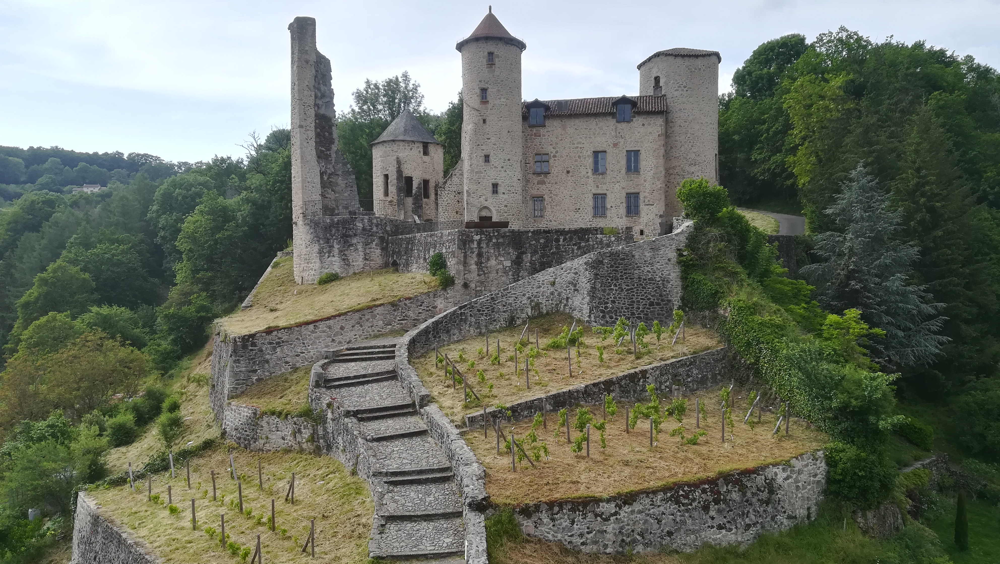

Ex
Archivis
Accueil
A propos
Paléographie
Articles
Archives
LISTE DES ARCHIVES

Funérailles de Jacques D'Escars (1631)
Les funérailles du seigneur de Laroquebrou relatées par le curé Pierre Savy
Découvrir →